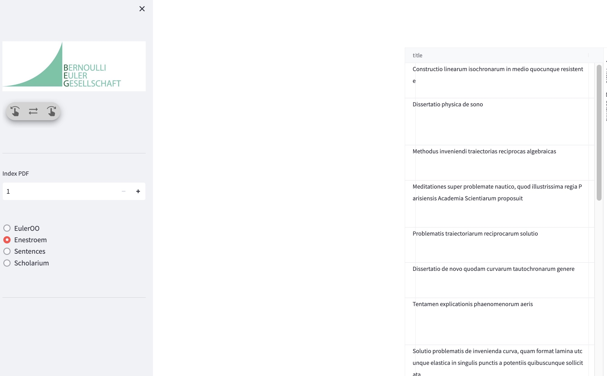

1 Todo
1.1 eulerLettreDigital.py
1.1.1 enestroem tabelle
- Die Tabelle sollte einspaltig angezeigt werden, nicht zweispaltig. Immer noch mit merkwürdiger Zeilenformatierung

1.1.2 code
in grids.py musste ich st.cache auskommentieren, da es sonst nicht funktioniert hat.
1.1.3 Opera Bernoulli Euler
- Unterhalb des logos sollte ein Titel “Opera Bernoulli Euler” stehen
1.1.4 Scholarium
Anstelle “Euler Literatur” -> “Literature”
euler_sec.bib
Die bibliografische Datenbank sollte aus SiteDev geladen werden, dort liegt einen aktuelle Version vor. verdun2015 ist neu hinzugefügt werden und sollte entsprechend aktuelle angezeigt werden.
1.1.5 Notebook
Wo ist das Verzeichnis für die html Dateien?
Angezeigt werden sollte nur das file.stem, nicht das suffix
1.1.6 Help
- Ich hatte schon einmal eine Hilfe in die Sidebar eingebaut. Diese sollte wieder eingebaut werden. Die enthielt auch eine Beschreibung der Spalten